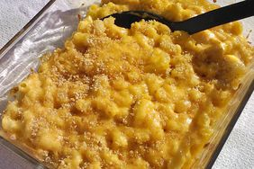

Mac'n'Cheese

Mac'n'Cheese.
Ingredients:
- 1 lb elbow macaroni
- 4 tablespoons butter
- 1/4 cup all-purpose flour
- 3 cups milk
- 2 cups shredded cheddar cheese
- 1 teaspoon salt
- 1/2 teaspoon black pepper
- 1/2 teaspoon paprika (optional)
Steps:
- Preheat oven to 350°F (175°C).
- Cook macaroni according to package instructions until al dente. Drain and set aside.
- In a large saucepan, melt butter over medium heat. Stir in flour and cook for about 1 minute until bubbly.
- Gradually whisk in milk, stirring constantly until the mixture thickens and bubbles.
- Remove from heat and stir in cheese until melted and smooth. Season with salt, pepper, and paprika if using.
- Add the cooked macaroni to the cheese sauce and mix well.
- Transfer the mixture to a greased baking dish and bake for 20-25 minutes until bubbly and golden on top.
- Let it cool for a few minutes before serving.
Back to Recipes